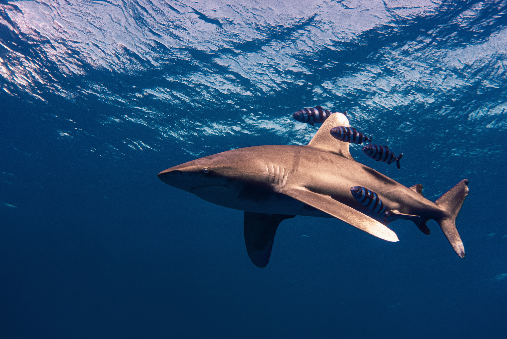
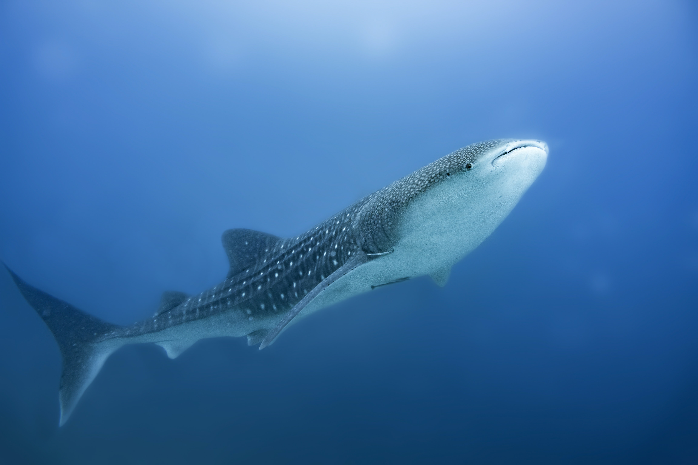

The oceanic whitetip shark is an open ocean shark. This shark is slow moving but very opportunistic and has a mean reputation. This shark has been famous for following ships out at sea looking for scraps thrown overboard. They also find and eat the remnants of whales that have died and started floating towards the surface. These sharks, with their large pectoral fins are commonly targeted for meals such as shark fin soup.
